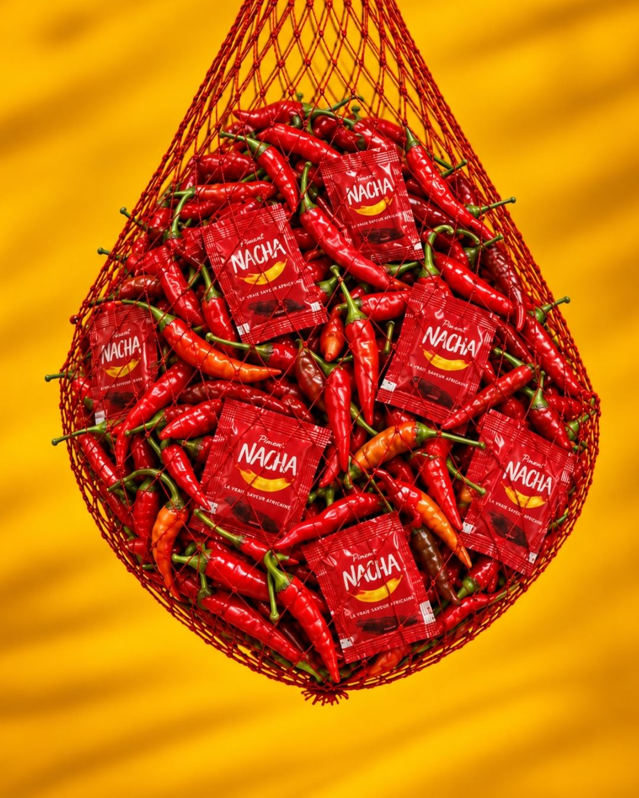
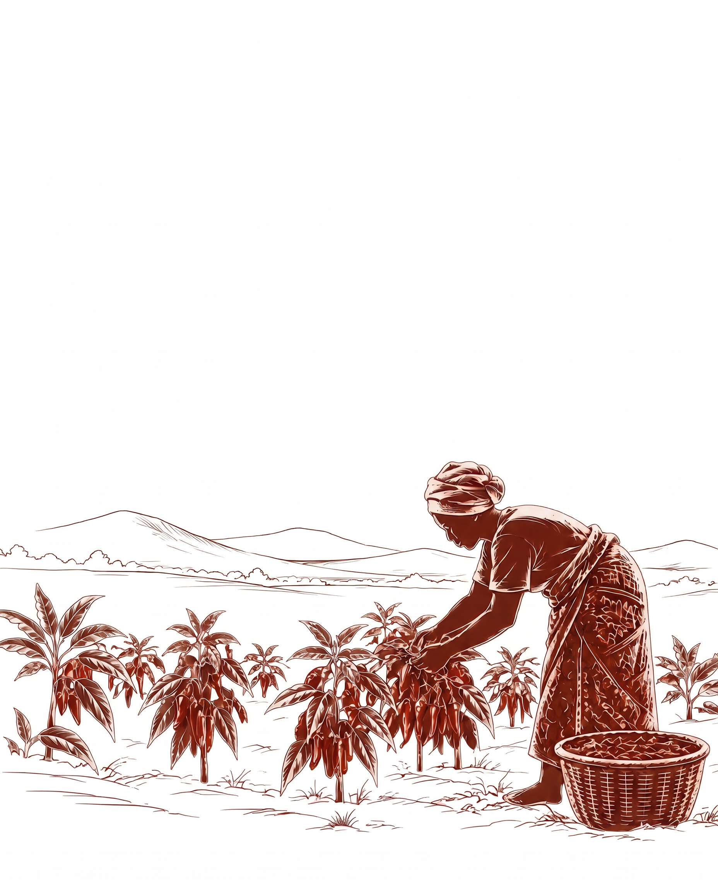
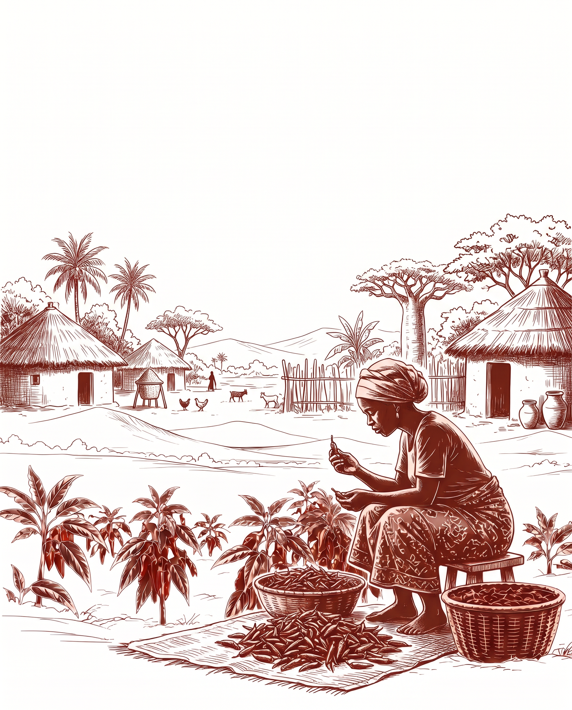
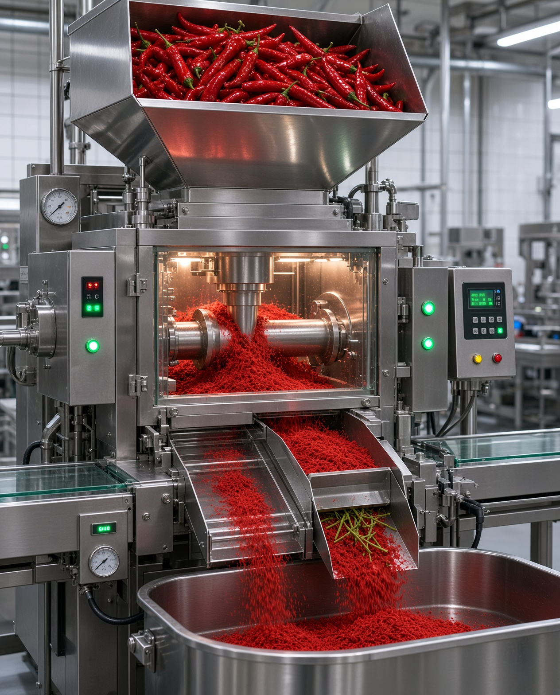
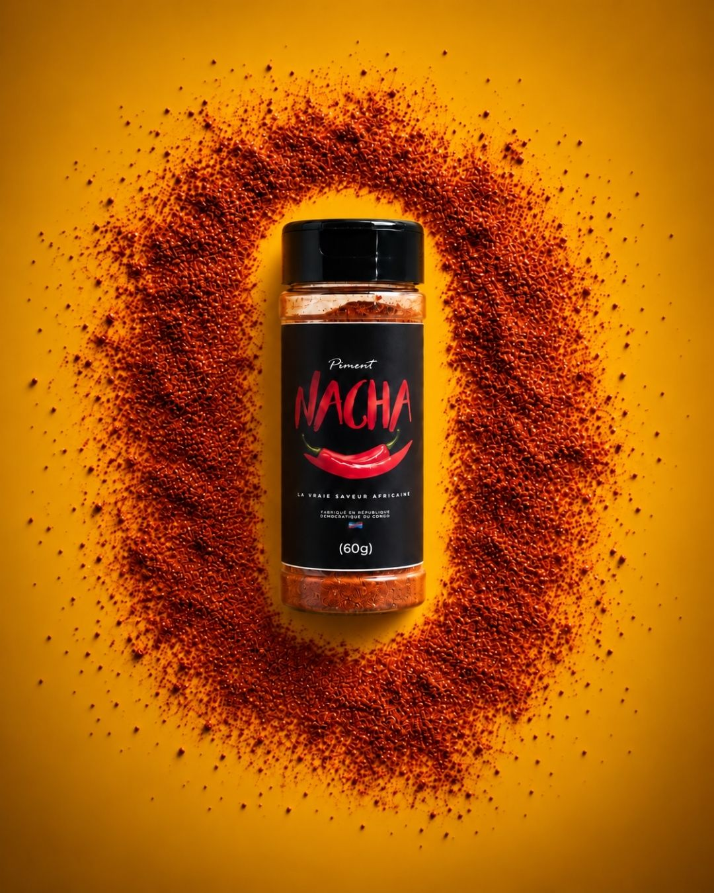
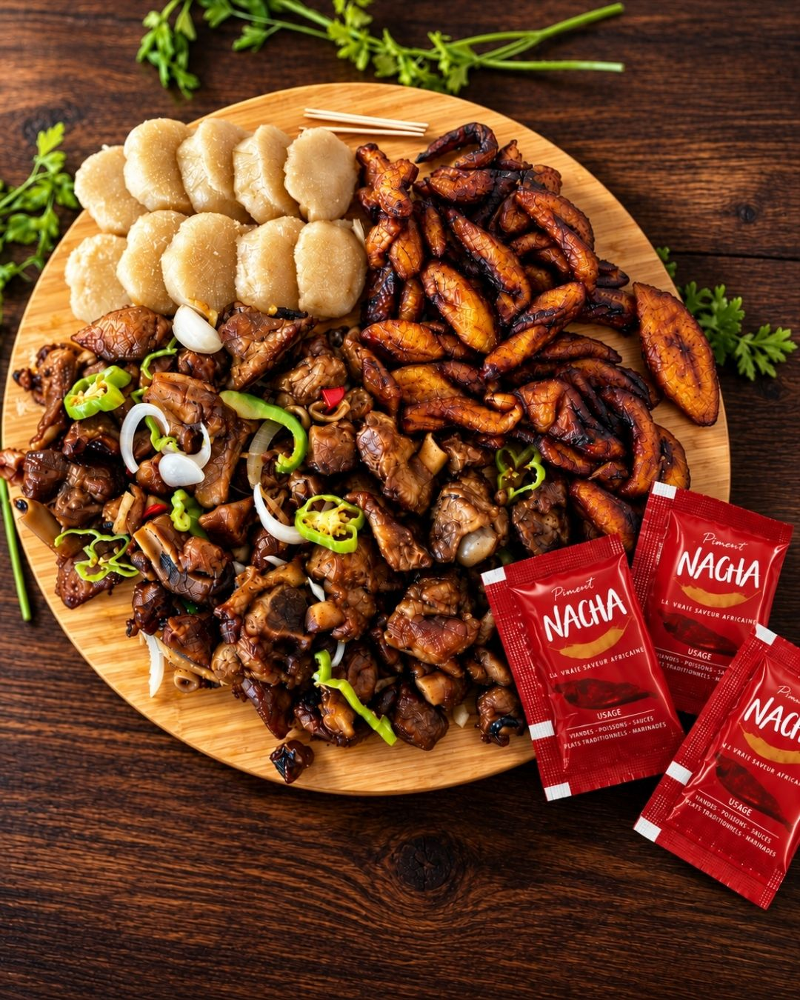

Saveur et accessibilité
Proposer un piment savoureux, propre et accessible.
Une histoire de goût, de mémoire et d'ambition. Une recette familiale devenue le point de départ d'une marque congolaise tournée vers l'avenir.

Histoire de NACHA
NACHA est née d'une histoire familiale.
À l'origine, une recette de piment préparée par la mère du fondateur, reconnue par son entourage pour son goût unique. Cette recette, devenue un hommage, a inspiré la création d'une marque capable de rendre ce piment accessible à un plus grand nombre de personnes.
Aujourd'hui, NACHA est une marque agroalimentaire de FulltechCongo, spécialisée dans la transformation du piment sec et des épices locales. Notre ambition est de faire évoluer une tradition artisanale vers une entreprise moderne, créatrice de valeur, d'emplois et de fierté locale.
Dans la transformation de produits naturels, NACHA veut être reconnue pour sa qualité, son innovation, son impact social et sa contribution à la valorisation de l'agriculture locale.
Notre mission
Notre mission guide la façon dont nous préparons nos produits, travaillons avec les acteurs locaux et développons notre activité.
Proposer un piment savoureux, propre et accessible.
Valoriser les producteurs et les épices locales.
Garantir une transformation attentive à l'hygiène et à la qualité.
Développer des circuits de distribution modernes.
Contribuer à une agriculture congolaise durable et résiliente.
Créer des opportunités économiques pour les communautés locales.
Notre contribution au développement durable
Pour NACHA, la réussite ne se mesure pas seulement en ventes. Elle se mesure aussi par notre capacité à soutenir une agriculture plus forte, à réduire les pertes et à créer de la valeur là où elle est produite.
En choisissant NACHA, vous encouragez une marque qui veut rendre l'agriculture congolaise plus résiliente, plus structurée et plus porteuse d'avenir.
Sécuriser l'approvisionnement en piment et valoriser les producteurs.
Agir grâce au séchage, à la transformation et à un meilleur conditionnement.
Privilégier des solutions plus responsables et biodégradables.
Dans la production, la distribution, le marketing et la logistique.
Notre production
La qualité commence bien avant l'emballage. Chez NACHA, nous travaillons à rapprocher chaque consommateur de l'origine de son produit.
DE L'ORIGINE AU PRODUIT FINI
LE TERROIRLe piment est produit avec l'appui de producteurs locaux, notamment dans les zones rurales partenaires.

SÉLECTIONLes matières premières sont sélectionnées pour leur qualité et leur potentiel aromatique.

TRANSFORMATIONLe piment est séché, broyé, mélangé aux épices locales et soumis à un triple tamisage.

CONDITIONNEMENTLe produit est emballé pour protéger son goût, sa propreté et sa conservation.

À VOTRE TABLENACHA arrive dans les supermarchés, épiceries, restaurants, marchés et points de vente partenaires.
Notre engagement pour les femmes du Kwilu
Derrière chaque récolte, il y a le travail, le courage et le savoir-faire de femmes qui font vivre leur terre.
Dans le Kwilu, de nombreuses femmes ont la terre, le courage et le savoir-faire. Ce qui leur manque souvent, ce sont les moyens de produire davantage, de mieux conserver leurs récoltes et de vendre à un prix juste.
À travers le préfinancement des cultures de piment, NACHA souhaite accompagner des femmes organisées en coopératives agricoles. L’objectif est simple : leur donner les moyens de transformer leur travail en revenus durables.
Votre contribution peut faire la différence
Chaque contribution peut participer au développement des activités agricoles et à l'amélioration des conditions de production des femmes accompagnées.
Des houes et des équipements essentiels pour faciliter le travail aux champs.
Des semences adaptées pour accompagner les cultures de piment.
Un apprentissage des techniques agricoles améliorées et des bonnes pratiques.
Des moyens pour améliorer les récoltes, la conservation et réduire les pertes.
Un débouché commercial grâce à l'approvisionnement de NACHA.
Derrière chaque outil donné, il y a une femme qui gagne en autonomie.
Derrière chaque semence plantée, il y a une famille qui renforce sa sécurité alimentaire.
Derrière chaque formation, il y a une communauté qui construit une prospérité durable.
Ensemble, faisons grandir le Kwilu
Soutenir NACHA, c’est participer à une agriculture qui nourrit les familles, valorise le travail des femmes et fait grandir le Kwilu.
Nos coordonnées pour votre contribution
Titulaire : NACHA
Banque : EQUITY BCDC
Titulaire : NACHA
Merci de votre engagement aux côtés des femmes productrices du Kwilu.